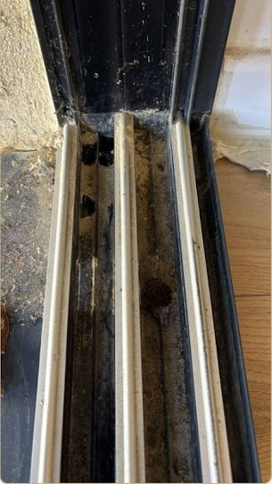
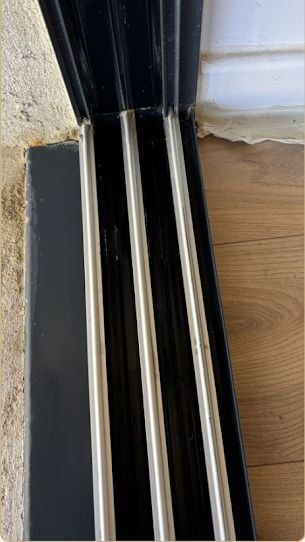
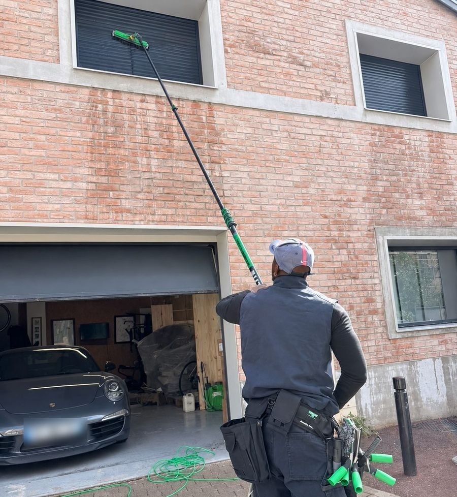
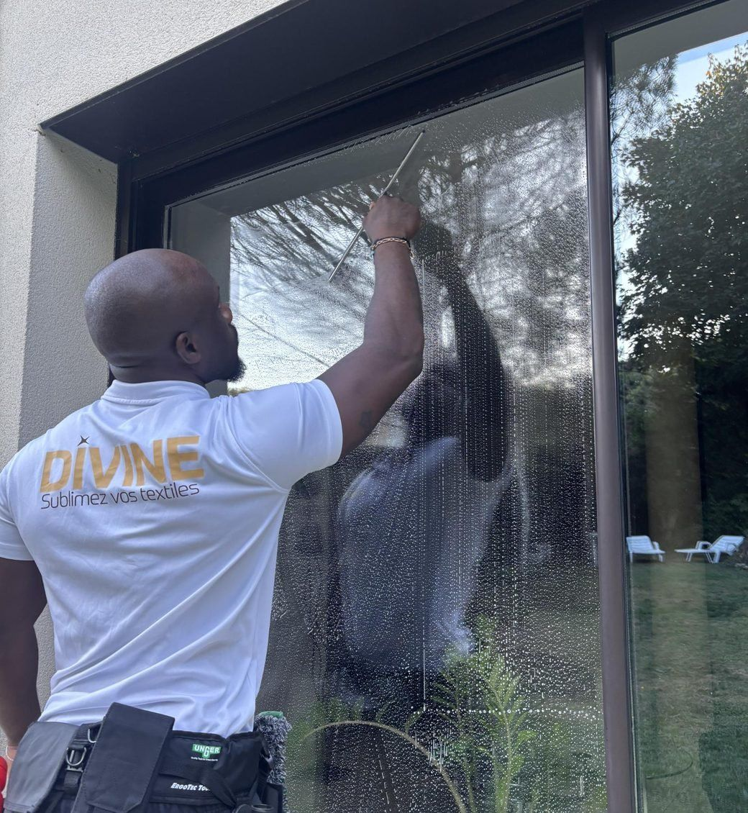
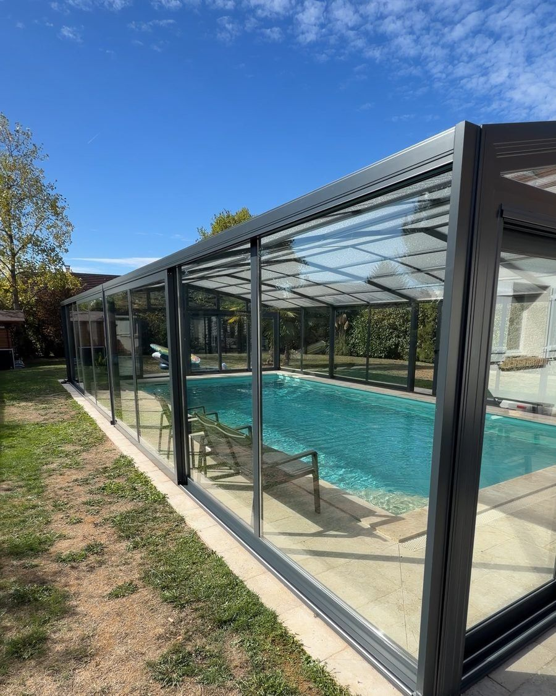
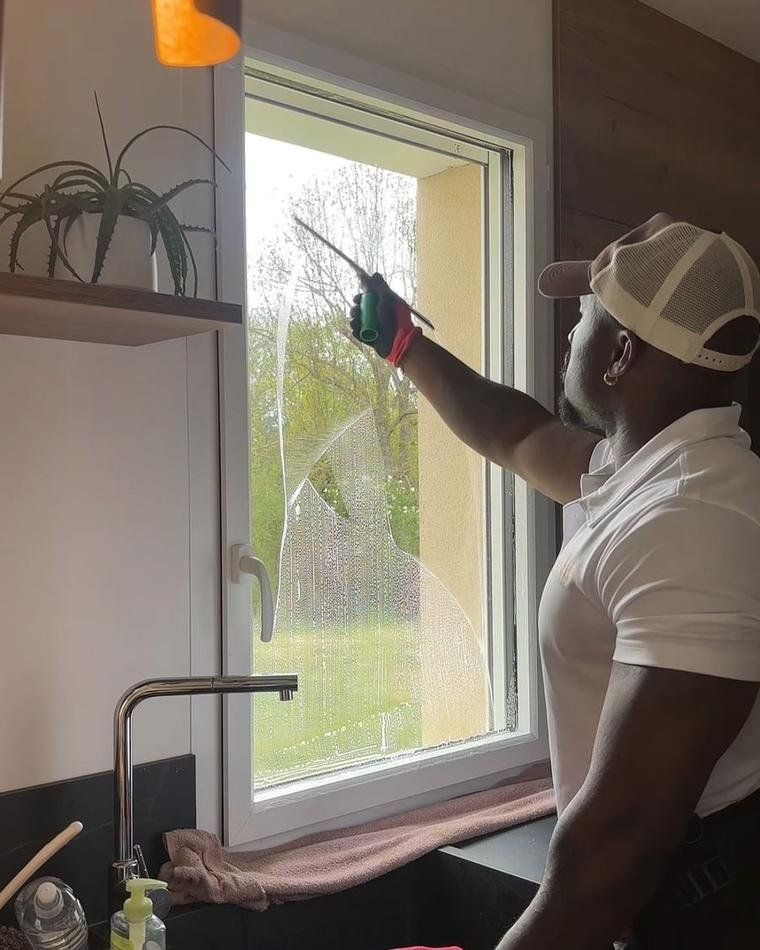

Nettoyage de vitres.
Fenêtres, baies vitrées, vérandas, abris de piscine et vitrines lavés à l'eau pure et finis à la raclette. Sans trace, sans produit agressif, pour les particuliers comme pour les commerces.
Notre approche
Eau pure filtrée pour la hauteur, raclette et microfibre pour la finition, contrôle en contre-jour avant de partir. Nous lavons jusqu'au deuxième étage depuis le sol avec une perche télescopique : sans échelle, sans nacelle, sans risque pour votre façade.
Ce qu'on nettoie
- Fenêtres et baies vitrées, intérieur et extérieur
- Vérandas, verrières et toitures vitrées
- Abris de piscine et parois vitrées de jardin
- Vitrines de commerce et façades d'enseigne
- Garde-corps et balustrades en verre
- Miroirs et parois de douche
- Volets, persiennes et stores extérieurs
- Rails, feuillures et appuis de fenêtre
- Vitres de bureaux et parties communes
- Vitrages après travaux ou fin de chantier
Pourquoi un nettoyage de vitres professionnel ?
La trace sur une vitre vient rarement du produit : elle vient du geste, de l'ordre des passages et de la finition des bords. Nous dépoussiérons avant de mouiller, raclons en un geste continu puis reprenons les quatre bords à la microfibre.
En hauteur, l'eau pure ne contient plus ni calcaire ni minéraux : elle sèche sans la moindre marque. Chaque vitrage est contrôlé en contre-jour avant de passer au suivant.
Et pour les pros ?
Commerces, bureaux, restaurants, halls d'immeuble : passages ponctuels ou contrat d'entretien, avant l'ouverture ou après la fermeture. Même méthode, même interlocuteur, facturation mensuelle sur contrat.
Crédit d'impôt 50 % pour les particuliers
Le lavage de vitres à domicile relève des services à la personne. Nous travaillons avec la coopérative Unipros : avec l'avance immédiate de l'Urssaf, vous ne réglez que la moitié du prix au moment de la facture, sans rien avancer et sans rien déclarer ensuite.
Le verre, c'est la partie facile.
La saleté se loge dans les rails, les angles et les joints. C'est ce qu'on voit en ouvrant la fenêtre, et c'est souvent là que le nettoyage s'arrête. Pas chez nous.

Avant
Après- Rails et glissières aspirés puis dégraissés
- Angles et recoins repris à la main
- Joints, montants et parcloses essuyés
- Poignées, charnières et appuis de fenêtre
De votre appel à la satisfaction.
Votre demande
Formulaire en 2 minutes ou appel direct. Quelques photos suffisent pour comprendre vos vitrages et l'accès.
Devis sous 24 h
Prix ferme et détaillé, crédit d'impôt de 50 % déjà calculé pour les particuliers.
Intervention
Jensen se déplace personnellement. Protection du sol, eau pure, raclette et microfibre.
Contrôle en contre-jour
Vérification vitre par vitre avec vous avant de partir. Une trace oubliée est reprise sur place.
Avec Divine Nettoyage
- Vitres réellement transparentes, même en contre-jour
- Encadrements, rails et appuis compris
- Eau pure, sans produit agressif
- Crédit d'impôt de 50 % pour les particuliers
Sans entretien
- Traces et voiles visibles à la lumière
- Calcaire incrusté sur les vitres
- Rails encrassés et encadrements oubliés
- Échelle et prise de risque en hauteur
Nos chantiers en images






Une remise à chaque passage.
Trois rythmes de passage, chez vous comme dans votre commerce. À chaque intervention, un montant vous est offert dès que le chantier dépasse un seuil. Le nettoyage ponctuel et la fin de chantier sont chiffrés sur devis.
offerts à chaque nettoyage, pour tout chantier de plus de 150 €
- 2 passages par an
- Vitres intérieur et extérieur
- Encadrements, rails et appuis inclus
offerts à chaque nettoyage, pour tout chantier de plus de 200 €
- 3 à 4 passages par an
- Vitres intérieur et extérieur
- Priorité sur le choix du créneau
offerts à chaque nettoyage, pour tout chantier de plus de 300 €
- 1 passage par mois
- Vitres, encadrements et volets
- Créneau réservé à l'année
Ce que disent nos clients.
« Mes vitres sont impeccables. »
Très bonne prestation que je compte réitérer. Divine Nettoyage a été très professionnel et mes vitres sont impeccables, je recommande.
« De confiance et chaleureux. »
Nettoyage impeccable après 2 ans sans avoir nettoyé mes vitres, Jensen est de confiance et chaleureux. Je recommande vivement et referai appel à vos services cet été !
« Une qualité incroyable. »
Prestation d'une qualité incroyable ! Merci à Jensen pour sa disponibilité et son travail rigoureux. Je vous recommande Divine Nettoyage les yeux fermés.
Vos questions
Combien coûte un nettoyage de vitres ?
Le tarif dépend du nombre de vitrages, de leur accessibilité et de leur état. Un devis gratuit est établi après un bref échange, avec photos ou dimensions. Nos formules d'entretien offrent 25 € dès 150 € de chantier, 50 € dès 200 € et 100 € dès 300 €.
Intervenez-vous sur les vitres en hauteur ?
Oui. Nous utilisons une perche télescopique alimentée en eau pure, qui permet de laver jusqu'au deuxième étage depuis le sol, sans échelle ni nacelle. C'est plus sûr, plus rapide, et sans trace au séchage.
Qu'est-ce que l'eau pure ?
C'est une eau débarrassée de son calcaire et de ses minéraux par filtration. Comme elle ne contient plus rien, elle sèche sans laisser la moindre marque : aucun essuyage n'est nécessaire après le rinçage.
Nettoyez-vous les vérandas et les abris de piscine ?
Oui, c'est l'une de nos spécialités. Toits de véranda, verrières, abris de piscine vitrés, garde-corps en verre : ces surfaces s'encrassent vite et se nettoient rarement bien seules.
Faut-il être présent pendant l'intervention ?
Pour l'extérieur, non, à condition que les accès soient disponibles. Pour l'intérieur, une présence est nécessaire à l'ouverture et pour le contrôle final. Chez les professionnels, nous pouvons intervenir avant l'ouverture ou après la fermeture.
Que se passe-t-il s'il pleut le jour prévu ?
Une pluie fine n'empêche pas de travailler et ne salit pas une vitre correctement lavée. En cas de fortes intempéries, nous vous proposons de reporter sans frais.
Le nettoyage de vitres ouvre-t-il droit au crédit d'impôt ?
Oui, pour les particuliers. Le lavage de vitres à domicile relève des services à la personne : 50 % du montant vous est rendu. Avec l'avance immédiate de l'Urssaf, vous ne réglez directement que la moitié.
Devis gratuit pour vos vitres.
Envoyez-nous deux ou trois photos de vos surfaces vitrées : nous vous répondons sous 24 heures avec un prix ferme, sans engagement.
- Zone
- Val-d'Oise et toute l'Île-de-France, jusqu'au sud de l'Oise
- Disponibilité
- Joignable 7/7 · Interventions du lundi au samedi, créneaux en soirée possibles
- Téléphone
- 06 99 14 25 08